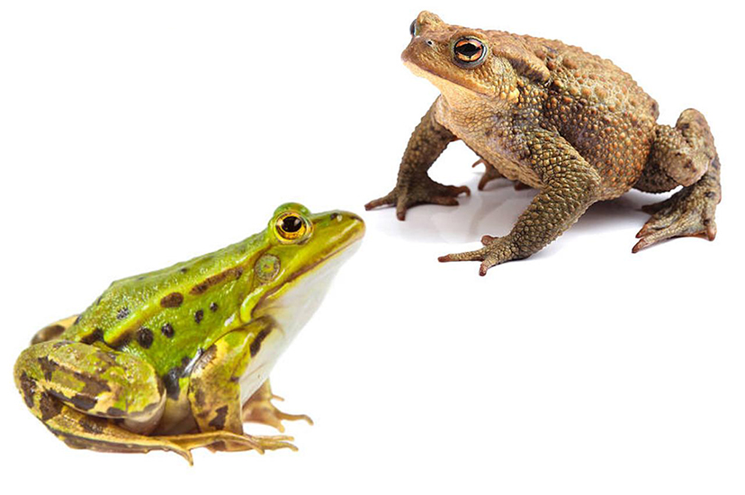

¿Sabes la diferencia entre un sapo y una rana?

Las ranas son anfibios anuros que se caracterizan por sus cinturas delgadas y la piel rugosa. Muchas poseen estrías finas que recorren la espalda, aunque sin las verrugas típicas de los sapos. Son excelentes saltadoras gracias a sus patas traseras, que son largas y delgadas. Suelen ser de color verde o marrón con manchas negras y amarillentas por el dorso y más pálidas por el vientre. Muchas de las ranas tienen crías a principio del verano, aunque las especies tropicales y subtropicales lo hacen durante todo el año. Las hembras desovan hasta veinte mil huevos.
Al igual que las ranas, los sapos son anfibios anuros. No obstante, poseen características que los distinguen de las ranas. Según la cultura popular, ambos anfibios se diferencian en que las ranas tienen la piel lisa y húmeda, mientras que los sapos tienen la piel áspera y seca. Las patas de los sapos son más cortas que las de las ranas, ya que los sapos suelen caminar más de lo que saltan.
De todas maneras, existen más diferencias entre las ranas y los sapos. No tienen el mismo tipo de piel ni la misma forma del cuerpo. Tampoco son iguales sus extremidades. También se diferencian por la forma de poner los huevos y de desplazarse. Además, habitan en lugares distintos.
Por empezar, mientras que la piel de las ranas es lisa y brillante, la de los sapos es más gruesa y está cubierta de protuberancias que parecen verrugas. Esto se debe a que los sapos están más adaptados a la vida lejos del agua y su piel los protege. En cuanto a la forma del cuerpo y las extremidades, las ranas son más esbeltas y ágiles, y tienen patas largas y finas. Los sapos, en cambio, son más robustos y sus patas son más musculosas y cortas. Por otra parte, si bien tanto los sapos como las ranas ponen sus huevos en el agua, las ranas lo hacen formando nubes recubiertas de una sustancia que mantiene los huevos unidos. Los sapos, en cambio, disponen sus huevos en líneas sobre las hojas de las plantas acuáticas. Respecto de su desplazamiento, las ranas suelen saltar, mientras que los sapos suelen caminar. Por último, las ranas viven muy cerca de las fuentes de agua, mientras que los sapos pueden vivir largos períodos de tiempo en la superficie terrestre.
Diferencia entre sapo y rana Si te preguntabas cuál es la diferencia entre sapo y rana, presta atención a esta lista con las principales diferencias que pueden apreciarse a simple vista entre estos tipos de anfibios: Tipo de piel. Forma del cuerpo. Forma de las extremidades. Forma de poner los huevos. Cómo se desplazan. Hábitat. La piel de los sapos y las ranas Mientras que la piel de las ranas es lisa y brillante, siempre de aspecto húmedo, la de los sapos es más gruesa y basta, cubierta de protuberancias similares a verrugas. Esto se debe a que los sapos están mucho más adaptados a la vida lejos del agua y su piel los protege. Esta, además, produce un peculiar mal olor y es en muchos casos es venenosa ante los depredadores que la muerden. No obstante, también hay ranas venenosas. Morfología del cuerpo y las patas Cuando pensamos en ranas, imaginamos animales esbeltos y de cuerpos ágiles, con patas largas y finas, especialmente desarrolladas en el caso de las traseras. Con los sapos, en cambio, lo común es estar ante especies de porte mucho más robusto y contundente, más musculosas y de patas más cortas. El cuerpo de los sapos es más corto y redondeado, mientras que el de las ranas, en comparación, resulta alargado. Cómo ponen los huevos los sapos y las ranas Pese a que ambas familias ponen sus huevos en el agua, las ranas lo hacen formando nubes recubiertas de una sustancia que mantiene los huevos unidos. Los sapos, en cambio, disponen sus huevos en líneas sobre las hojas de las plantas acuáticas. Desplazamiento Las ranas son las reinas de los saltos, ya que su menor peso y sus patas traseras, en comparación más grandes que las de los sapos, les permiten impulsarse con mucha facilidad. Además, algunas ranas arborícolas tienen ventosas en las patas que les permiten trepar con facilidad. Los sapos, en cambio, prefieren correr o incluso enterrarse con sus patas traseras, ya que son menos ágiles. Hábitat Ambas familias son criaturas anfibias, pero mientras que las ranas apenas se alejan de las fuentes de agua porque son más dependientes de la humedad, los sapos pueden vivir largos periodos de tiempo de forma terrestre, ya que su organismo tiene un mayor control para retener el agua en sus cuerpos. Sin embargo, todas estas diferencias, especialmente las que se refieren a morfología y aspecto, son solo una guía: algunas ranas parecen sapos y viceversa, por lo que solo un experto podrá diferenciarlos con total seguridad. Te recomendamos echar un vistazo a estos otros artículos de EcologíaVerde sobre Qué animales son anfibios y dónde se encuentran y acerca de Cómo respiran los anfibios.